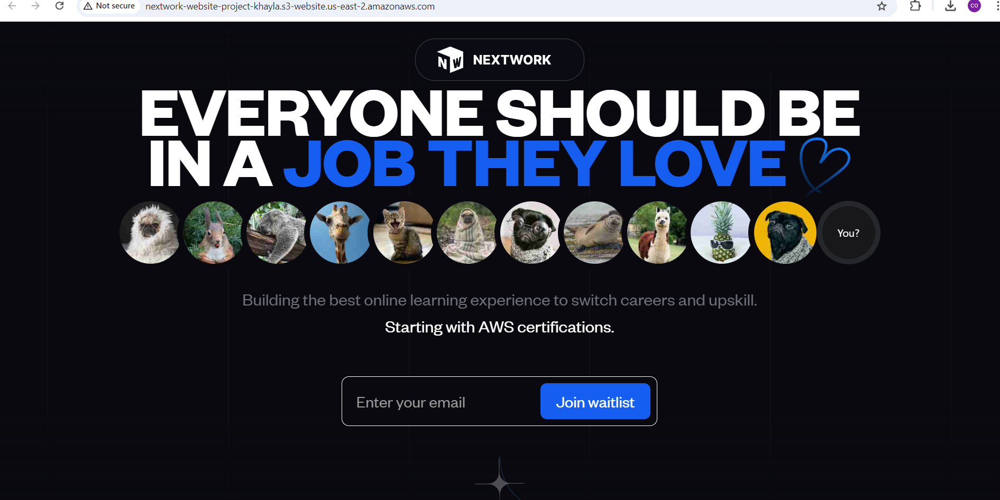

Cloud Infrastructure & Automation Projects
Explore my practical AWS cloud implementations and solutions

Automate Cloud Infrastructure with Terraform, GitHub Actions & Boto3
Built a fully-functional AWS environment using Terraform and automated provisioning with GitHub Actions and Boto3 for scalable, code-driven infrastructure deployment.
Terraform
GitHub Actions
Boto3
EC2, S3, VPC, IAM

Host a Website on Amazon S3
A scalable website hosted on Amazon S3 for efficient data storage and easy web access.
Amazon S3

Build a Virtual Private Cloud
A fully-configured VPC connected to the internet for seamless cloud resource communication.
Amazon VPC (Virtual Private Cloud)
Internet Gateway
Subnets
Route Tables
Security Groups

Build a Virtual Private Cloud with AWS CLI
A fully-configured VPC connected to the internet for seamless cloud resource communication, created using AWS CLI commands.
AWS CLI
Amazon VPC (Virtual Private Cloud)
Internet Gateway
Subnets